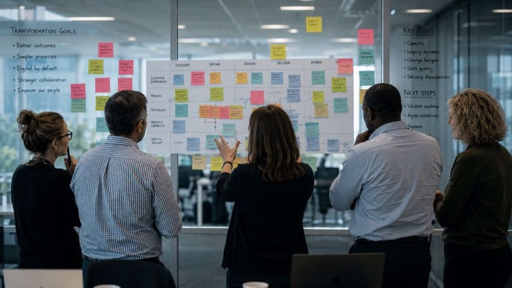

Capability that survives budget pressure, restructuring and scrutiny.
Specialist support for local and central government, arm's-length bodies and public sector transformation programmes — covering workforce planning, role architecture, leadership development and training governance for public money.
Built for public sector teams under real constraint.


Capability expertise, applied under real budget and scrutiny pressure.
Workforce & Role Architecture Redesign
Redesigning roles and structure to scale cleanly under pressure — proven in national crisis response, transferable to any restructuring.
Transformation & Change Capability
Diagnosing the capability a transformation programme actually needs, before the solution is designed — so change survives launch.
Leadership Development Under Pressure
Leadership development grounded in real high-pressure operational experience, not theoretical models.
Training Governance & Assurance
Governance and assurance that stands up to scrutiny committees and audit — built for public money, not just process compliance.
Digital & Learning Technology
Learning technology that improves delivery and reporting without assuming budget for a full re-platform.
Capability Frameworks for Restructuring
Consistent, defensible competency standards that hold up when roles and structures are changing fast.
The thinking we bring to every public sector engagement.
The Golden Thread
One unbroken line from business need to business outcome. Read top to bottom, it is a design method; bottom to top, an audit tool. If an activity can’t be traced back to a performance requirement, why is it being done? From the book Training Isn’t Always the Answer.
The Capability Diagnostic
Eight places to look before you blame the people. Only one is primarily fixed by training, and most real performance problems have causes in two, three or four at once. From the book Training Isn’t Always the Answer.
One method, five stages, every engagement.
Understand
Agree the outcome, the context and what good performance looks like before anyone discusses solutions.
Diagnose
Gather evidence, separate symptoms from causes and test whether the problem is knowledge, skill, process, system, structure or something else.
Define
Turn the diagnosis into clear requirements: the performance, behaviours, capabilities and conditions the solution must deliver.
Intervene
Choose the interventions that close the gap. Sometimes that is training. Often it is a process, a tool, a role, a decision or a combination.
Prove
Measure against the baseline agreed at the start, so the organisation knows what worked and what to do next.
In a crisis, clarity of role beats volume of training every time.
Operational Role Architecture Redesign (Op Isotrope)
Role architecture redesign during a national crisis response, so teams could scale quickly and cleanly.
Evidence-based recommendations that stand up to audit, scrutiny and elected members.
Common questions from public sector leaders.
Yes — I can work through direct engagement or via the procurement route your organisation already uses. Tell me what's required and we'll work out the right way in.
Yes. The Operational Role Architecture Redesign delivered during a national crisis response (Op Isotrope) is a direct example — role ambiguity, not individual skill, was the biggest drag on effectiveness under crisis pace, and clarity of role beat volume of training.
Recommendations are evidence-based by design, so they're defensible to auditors, scrutiny committees and elected members — not assertions that collapse under questioning.
Yes — engagements are scoped around your existing team's capacity. I bring the diagnostic method and the analysis; your team isn't left carrying a parallel programme on top of business as usual.
Yes, across central government departments, arm's-length bodies, combined and local authorities, and public sector transformation programmes more broadly.
Need public sector capability or workforce support?
Tell me what you're facing — restructuring, transformation or governance. A practical conversation, no sales pitch.